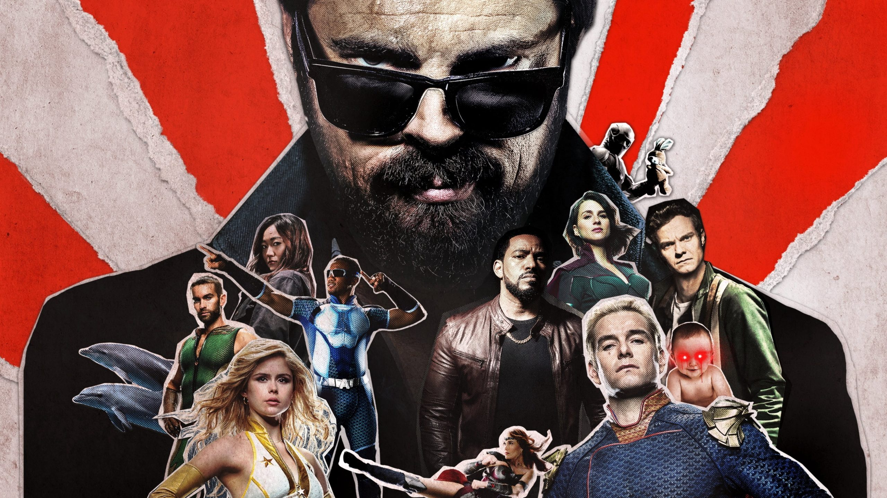

História

The Boys é uma série de revistas em quadrinhos americana criada por Garth Ennis e Darick Robertson. Ennis foi o roteirista de todas as 72 edições publicadas entre 2006 e 2012, além de uma minissérie derivada em seis edições, Herogasm, publicada em 2009. Robertson ilustrou as edições da série principal, enquanto John McCrea ilustrou Herogasm. As primeiras edições da série foram publicadas pela DC Comics, através de sua linha editorial WildStorm, e o restante a da série veio a ser publicado pela Dynamite Entertainment. Em 2019, o quadrinho foi adaptado para uma série de TV, para o serviço de vídeo sob demanda Amazon Prime Video. Garth Ennis anunciou uma continuação para o quadrinho, The Boys: Dear Becky, para lançamento em abril de 2020.
The Boys narra uma série de eventos ocorridos entre 2006 e 2008 num universo ficcional onde super-heróis existem, mas em sua grande parte tiveram seus valores morais corrompidos pela fama e celebridade que alcançaram, e não raro se comportam de forma irresponsável. Por isso um esquadrão de agentes da CIA, conhecidos informalmente como "The Boys", é responsável por monitorar as atividades da comunidade de seres super-poderosos. A história se foca em Hugh "Wee Hughie" Campbell, que após sua namorada ter sido morta durante um conflito entre heróis e vilões, passa a odiar os heróis. Hugh é convidado por Billy Butcher, líder dos The Boys a se juntar ao grupo e monitorar os heróis. Ennis declarara antecipadamente que pretendia superar a quantidade de imoralidades, cenas violentas e perversões que havia incluído em sua série Preacher, e manteria esse nível por toda a duração de The Boys.